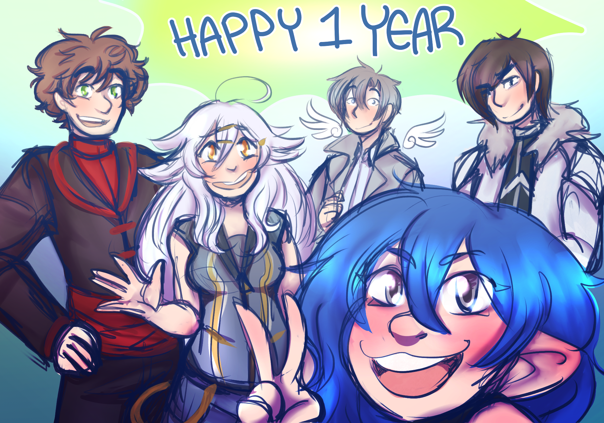

News

Picture by Washi commemorating the first anniversary of the Frontier Family
Picture by Washi commemorating the first anniversary of the Frontier Family
5th Anniversary...Kinda missed!
Ladies and gentlemen of the Frontier Family, did you know that Shayo was officially founded the 31st of March 2017? Meaning that New Dawn is officially more than five year old! However! The term "Frontier Family" would only become adopted later on, and was in fact suggested by Sora in August 2017!
Rev's Anniversary!
We will be celebrating Justin's Birthday on the 1st of October, only in a few days! We are still looking for some good ideas to celebrate his birthday, however let's make sure to organize something!